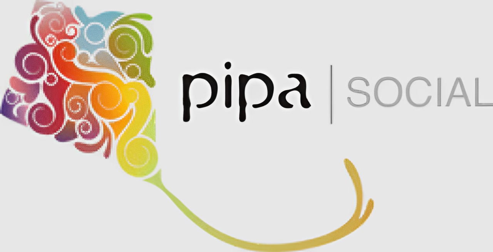

O site Jupcycling tem como objetivo único e exclusivo a divulgação de lojas de acessórios que utilizam materiais recicláveis em seu preparo. Tudo começou quando uma garotinha percebeu que lojas de pessoas que faziam produtos mais sustentáveis não tinham tanta divulgação quanto outras lojas, então a mesma decidiu criar um site de divulgação de duas lojas, sendo elas Ecojoias Carol Barreto e Pipa Social.
Atenção: Jupcycling não oferece nenhum modo de compra, sendo necessário acessar o site de cada loja citada para realizar uma compra.
Carioca, Carolina Barreto é a mente criativa por trás da marca que leva seu nome. Fruto da união da biologia com a joalheria, a Ecojoias nasceu em 2005 com a premissa de mudar o conceito do que é lixo e modernizar o conceito do que é uma joia.
Desde a idealização das peças até a criação do produto final, Carol produz todas as Ecojoias manualmente, com técnicas próprias e de ourivesaria, em um processo SLOW, onde desenvolve apenas uma coleção por ano.
Ela reutiliza materiais como o plástico da garrafa Pet bem como de outras embalagens, o alumínio das latinhas de bebidas, papel, chapas de radiografia e outros materiais recicláveis, vistos e descartados como lixo pela sociedade.
As Ecojoias são atemporais, colecionáveis e feitas para durar. Escolha a sua Ecojoia, mude o comprimento ou coloque na cor de sua preferência, respeitando a sua personalidade e estilo pessoal, para um guarda-roupa inteligente.
A preocupação com o meio ambiente está presente na embalagem, no produto final e na produção, onde a matéria prima é limpa com reaproveitamento de água de chuva e as sobras da confecção são destinadas a uma empresa recicladora.
Fechando o ciclo da cadeia, o atelier recebe sua Ecojoia antiga para uma repaginação ou para a destinação correta do descarte.
A Pipa Social é uma associação sem fins lucrativos, que há mais de 10 anos atende mulheres artesãs de comunidades em vulnerabilidade social. O propósito deles é promover o empoderamento e autonomia financeira dessas mulheres, por meio da capacitação profissional.
Utilizando materiais recicláveis, a associação impacta socialmente e ambientalmente o mundo, logo, Pipa Social é um tipo de slow fashion, ou seja, uma alternativa sustentável à moda globalizada. Enquanto o fast fashion prioriza a fabricação em massa, a globalização, o apelo visual, tem ocultação dos impactos ambientais do ciclo de vida do produto e o seu custo é baseado em mão de obra e materiais baratos sem levar em conta aspectos sociais da produção; o slow fashion preza pela diversidade, Prioriza o local em relação ao global, promove consciência socioambiental, contribui para a confiança entre produtores e consumidores; pratica preços reais que incorporam custos sociais e ecológicos, e mantém seus processos de produção entre pequena e média escalas.
